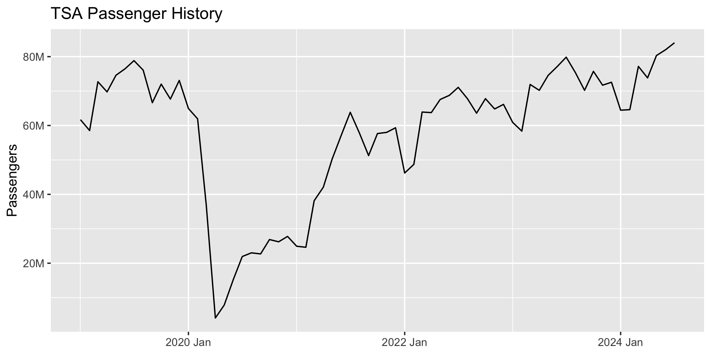
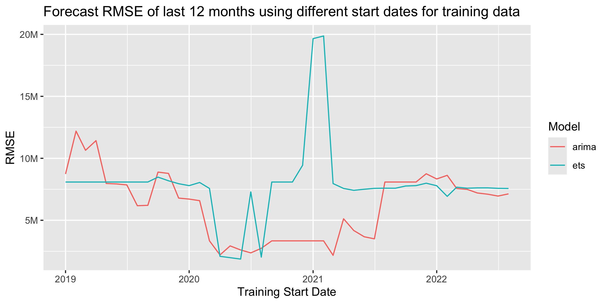

2024-08-27
If we want to forecast the TSA passenger data, we have to deal with the fact that Covid significantly disrupted normal operations. Will this impact the quality of our forecast? Should we be using the entire history to train our models, or should we ignore Covid and use only more recent data?
In creating forecasts like this in the past, I've alternated between using all available history or starting at April 2020 once Covid fully began. In most cases, it has seemed best to start history at April 2020, but this got me thinking that it would be interesting to cycle through all start dates to see if another starting point performed better.
We can forecast the final 12 months of this TSA passenger data using different training sets, with the start date varying from January 2019 through July 2023. We'll adjust the start date forward 1 month and record the RMSE forecast accuracy of each trial.
# Create basic Auto-Arima and Auto-ETS forecasts for the final 12 months of
# historical data. Will use this to cycle through historical data using
# different start months for the training data.
forecast_history <- function(df, start_yearmonth = "2019-01"){
# Create train and test sets
train <- df |> filter_index(start_yearmonth ~ "2023-07")
test <- df |> filter_index("2023-08" ~ .)
# Forecast with fable
fit <- train |> model(
# Auto-ARIMA and Auto-ETS models
arima = ARIMA(passengers),
ets = ETS(passengers)
# You can get even better ETS results by specifying the error, trend,
# and seasonality. But we'll just use the Auto-ETS for this exercise.
# ets = ETS(passengers ~ error('A') + trend('Ad') + season('A'))
)
# Forecast final 12 months
fcst <- fit |> forecast(h = 12)
fcst_accuracy <- accuracy(fcst, df) |> arrange(RMSE)
# Record start date group
fcst$start_yearmonth <- start_yearmonth
fcst_accuracy$start_yearmonth <- start_yearmonth
return(list(fcst, fcst_accuracy))
}
Below is the plot of RMSE from forecasting using each start date as the beginning of the training data. For this exercise, we're just using the auto-ARIMA and auto-ETS models from fable, allowing it to choose the optimal model based on the training data in each trial. We can actually get much better ETS results if we specify the error, trend, and seasonality, but we'll just stick with Auto-ETS for this exercise.
For the ARIMA models, starting the training data during Covid results in clearly better forecasts. The two lowest-RMSE start dates for ARIMA are March 2021 and April 2020. For the ETS models, starting the training data at the beginning of Covid also results in the best forecasts, but those lower errors don't last as long through Covid as with the ARIMA models. The ETS error quickly jumps back up to "normal" levels and has an odd spike up at the beginning of 2021. The two lowest-RMSE start dates for ETS are June 2020 and May 2020.
If we plot these error lines on top of our full historical data, it's a little easier to see how the different start-date accuracies align with the actual data. The two highlighted dots for each model line show the lowest two RMSE start dates.

Given that the optimal RMSE start dates are all fairly close, I would likely continue to choose April 2020 as the start date for forecasts like this, especially if I'm creating several forecasts across multiple lines of business that all have Covid impacts to differing degrees. April 2020 is a clear and reasonable dividing line as the first full month of Covid. While some other start months may eak out slightly lower RMSEs in this data set, April 2020 is a good general rule across multiple similar data sets.
If we were only focused on just this TSA data, we could pick the optimal start month for each model, have separate training sets for each model, and then combine their forecasts for a hopefully more accurate result!
# Standard packages
library(readr)
library(dplyr)
library(lubridate)
library(tidyr)
library(ggplot2)
library(scales)
library(forcats)
library(gt)
# Tidy time series packages
library(tsibble)
library(fable)
library(feasts)
# Read in and prepare data. Plot full history.
prepare_data <- function(){
# Read in data
df <- read_csv('../tsa.csv')
tail(df)
# Sum passengers by month
df <- df |>
group_by(date = floor_date(date, "month")) |>
summarise(passengers = sum(passengers)) |>
# Exclude any extra dates in the current month where we don't have a
# full month of data
filter(date < floor_date(today(), "month"))
# Convert data to tsibble
df <- df |> mutate(date = yearmonth(date))
df <- df |> as_tsibble(index = date)
# Plot data and return tsibble dataframe
autoplot(df, passengers) +
ggtitle("TSA Passenger History") +
scale_y_continuous(
name="Passengers",
labels=label_number(scale_cut = cut_short_scale())
) +
theme(axis.title.x = element_blank())
ggsave("images/tsa-passenger-history.png", width=20, height=10, units='cm')
return(df)
}
# Create basic Auto-Arima and Auto-ETS forecasts for the final 12 months of
# historical data. Will use this to cycle through historical data using
# different start months for the training data.
forecast_history <- function(df, start_yearmonth = "2019-01"){
# Create train and test sets
train <- df |> filter_index(start_yearmonth ~ "2023-07")
test <- df |> filter_index("2023-08" ~ .)
# Forecast with fable
fit <- train |> model(
# Auto-ARIMA and Auto-ETS models
arima = ARIMA(passengers),
ets = ETS(passengers)
# You can get even better ETS results by specifying the error, trend,
# and seasonality. But we'll just use the Auto-ETS for this exercise.
# ets = ETS(passengers ~ error('A') + trend('Ad') + season('A'))
)
# Forecast final 12 months
fcst <- fit |> forecast(h = 12)
fcst_accuracy <- accuracy(fcst, df) |> arrange(RMSE)
# Record start date group
fcst$start_yearmonth <- start_yearmonth
fcst_accuracy$start_yearmonth <- start_yearmonth
return(list(fcst, fcst_accuracy))
}
# Compare the accuracy of each forecast when using different sized training data
analyze_start_dates <- function(df){
# Get list of start dates to use in forecast training data
# They're handled as text strings in filter_index()
dates <- as.character(
yearmonth(
seq(as.Date("2019-01-01"), as.Date("2022-08-01"), by = "1 month")
)
)
# Create lists to store results
forecast_results <- list()
accuracy_results <- list()
# Forecast final 12 months of history using different start dates for training data
for (start_date in dates) {
results <- forecast_history(df, start_yearmonth = start_date)
forecast_results[[length(forecast_results) + 1]] <- as_tibble(results[[1]])
accuracy_results[[length(accuracy_results) + 1]] <- as_tibble(results[[2]])
}
# Combine lists of results into data frames
forecast_results <- bind_rows(forecast_results)
accuracy_results <- bind_rows(accuracy_results)
# Convert yearmonth strings to actual dates. This ensures ggplot will order the dates correctly.
forecast_results$start_yearmonth <- ym(forecast_results$start_yearmonth)
accuracy_results$start_yearmonth <- ym(accuracy_results$start_yearmonth)
# Plot ARIMA/ETS accuracy of forecast using different start dates for training data
accuracy_results |>
# ggplot(aes(x=date, y=rmse, color=.model)) +
ggplot(aes(x=start_yearmonth, y=RMSE, color=.model)) +
geom_line() +
labs(
title="Forecast RMSE of last 12 months using different start dates for training data",
x="Training Start Date",
color="Model"
) +
scale_y_continuous(
name="RMSE",
labels=label_number(scale_cut = cut_short_scale())
# labels=label_comma()
)
ggsave("images/model-rmse-results.png", width=20, height=10, units='cm')
# Combine history and accuracy results for plotting
df <- df |> mutate(group = "TSA Passenger Data") |>
rename(values = passengers) |>
select(date, group, values) |>
as_tibble()
accuracy_results <- accuracy_results |>
select(date = start_yearmonth, group = .model, values = RMSE)
history_and_accuracy <- bind_rows(df, accuracy_results)
# Pull out minimum two RMSE start dates for each model type
min_arima <- slice_min(filter(history_and_accuracy, group == 'arima'), order_by = values, n = 1)
min_ets <- slice_min(filter(history_and_accuracy, group == 'ets'), order_by = values, n = 1)
min_2nd_arima <- slice_min(filter(history_and_accuracy, group == 'arima'), order_by = values, n = 2)[2, ]
min_2nd_ets <- slice_min(filter(history_and_accuracy, group == 'ets'), order_by = values, n = 2)[2, ]
# Specify factor order to assign line colors
history_and_accuracy$group <- fct_relevel(history_and_accuracy$group, "TSA Passenger Data", "arima", "ets")
# Plot history along with RMSE of each training start date for each model
history_and_accuracy |>
ggplot(aes(x=date, y=values, color=group)) +
geom_line() +
scale_color_manual(values=c('black', "#F8766D", "#00BFC4")) +
annotate("point", x=min_arima[[1]], y=min_arima[[3]], size=2, color="#F8766D", alpha=0.75) +
annotate("point", x=min_2nd_arima[[1]], y=min_2nd_arima[[3]], size=2, color="#F8766D", alpha=0.75) +
annotate("point", x=min_ets[[1]], y=min_ets[[3]], size=2, color="#00BFC4", alpha=0.75) +
annotate("point", x=min_2nd_ets[[1]], y=min_2nd_ets[[3]], size=2, color="#00BFC4", alpha=0.75) +
labs(
title="Forecast RMSE of last 12 months using different start dates for training data",
x="Training Start Date"
) +
scale_y_continuous(
name="Passengers / RMSE",
labels=label_number(scale_cut = cut_short_scale())
)
ggsave("images/model-rmse-results-with-actuals.png", width=20, height=10, units='cm')
# Save top 5 best performing start dates under each model to HTML table
accuracy_results |>
rename("Start Date" = date, Model = group, RMSE = values) |>
group_by(Model) |>
slice_min(order_by = RMSE, n = 5) |>
gt() |>
fmt_number(
decimals = 0,
use_seps = TRUE
) |>
as_raw_html() |>
writeLines("results-comparison.html")
}
# Run
df <- prepare_data()
analyze_start_dates(df)